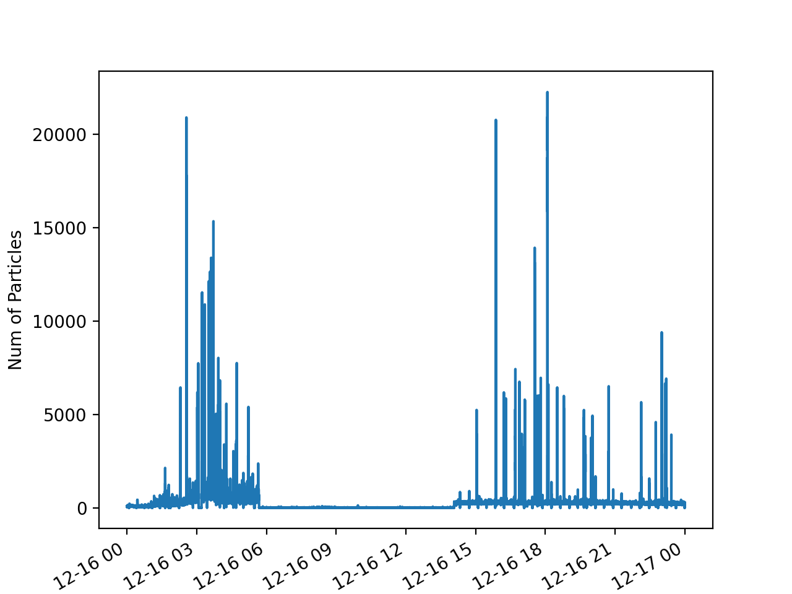

Viewing housekeeping data#
PySP2 contains built-in modules for loading and viewing SP2 housekeeping files with a .hk extension. These housekeeping files are then converted into xarray Datasets so that they can be easily analyzed and plotted. In order to load a housekeeping file, one simply does the following command:
my_hk = pysp2.io.read_hk_file(pysp2.testing.EXAMPLE_HK)
The pysp2.io.read_hk_file() function returns a standard xarray dataset. All of the variables
are 1 Hz timeseries. Therefore, each one of the variables in the xarray dataset can be visualized
using the standard xarray routines like this:
my_hk[‘Num of Particles’].plot() plt.show()